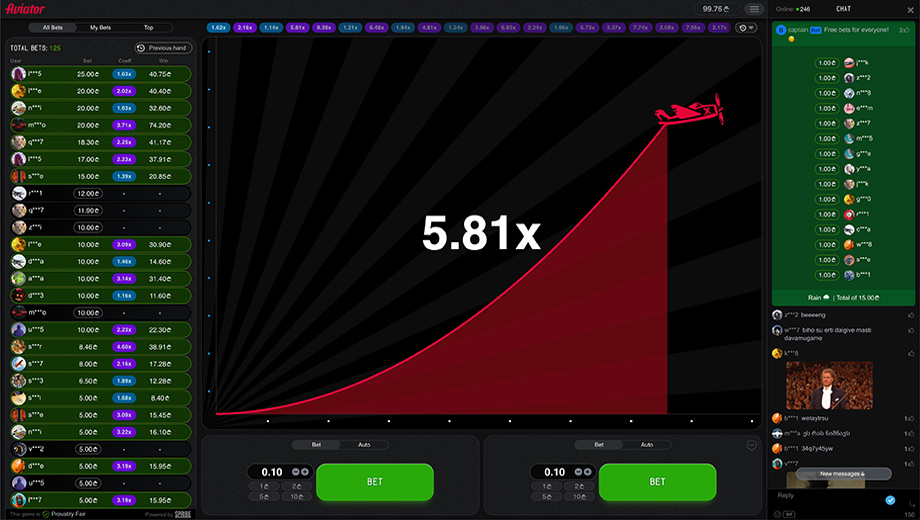
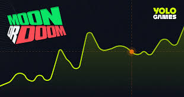

傳統博弈產業的困境：換皮已是奢侈
在博弈遊戲產業，創新是一件極其奢侈的事。
回顧過去十年的熱門作品，從早期的《五龍》、《多福多財》，
到後來的《奧林帕斯之門》、《魔龍傳奇》、《阿茲特克》，
再到現在滿街都是的《賽特》與《麻將胡了》，
會發現你去哪裡玩都玩得到，就美術風格有些不同而已。
對於經營方來說，開發一款全新玩法的風險極高，
而獲利壓力巨大，因此「能抄就抄」成了業界常態。
在這風氣下，願意投入資源「換皮」（更換主題）的，
都已經算是有匠心、願意對玩家負責的了。
大部分的廠商寧願"抄"，也不願嘗試未知的領域。
幣圈爆發: 難得的創新時代
幣圈爆發前，博奕遊戲只有 Slot, 棋牌,
後來有 Arcade game 可抄作業，才有魚機, 彩虹賓果的"創新"遊戲。

加密貨幣圈的爆發，創造難得的博弈"真"創新時代。
幣圈新概念、新領域，但也伴隨著新的高風險：
高獲利與高風險並存： 經營方雖然有機會爆賺，
但也要面對去中心化環境下的技幣圈爆發前。
當年討論度極高的《Fomo3D》與《Last Winner》，
最終都難逃駭客攻擊，整碗被端走。
慢慢地太創新的遊戲也消失，
又回到押注黑箱隨機結果的押分 Slot 模式。
直到 Crash Game 的出現。
Crash Game：一場成功的進化
Crash Game 就是大家暱稱的飛機或火箭，是多人遊戲
- 玩家在下注時間內下注，然後開始開獎。
- 不一樣的是，他開獎倍數是動態上升的，直到飛機飛走或火箭爆炸。
- 玩家可選擇在飛機飛走或火箭爆炸前，選擇獲利了結。
或是 飛機飛走或火箭爆炸，白忙一場。 - 是貪婪與恐懼的量子糾纏。

很多人可能不知道，Crash Game 並非憑空出現，
它的前身可以追溯到 Moon Doom。Moon Doom 的玩法是這樣的
- 一樣是多人遊戲，玩家在下注時間內下注，然後開始開獎。
- 跟股票一樣, 玩家可以做多做做空
- 兩分鐘內，分數會上上下下
- 玩家選擇何時該退出或兩分鐘或系統退出

Crash Game 出現後， Moon Doom 就很少有人討論，
我認為 Crash Game 作對幾件事
- 只看上升, 節奏變快。
- 只有上升，可以用小額押注體驗，風險變小
一槍斃命，不用血虧還抱持希望等兩分鐘。 - 說穿了也是押注後的黑箱隨機結果的遊戲，能過驗證。
- 保留玩家自主性，貪婪與恐懼糾結的樂趣
結論：這是博弈創新的終點嗎？
經過這幾年, Crash Game 也進化了以下功能。
- 增加《21點》押兩區的玩法
- 增加《21點》可以分牌 2 區的保險玩法
讓玩家在 2X 時可以 Cash Out 先拿回保本，
讓另一注放心地進行貪婪冒險。
過這麼多年，成功進化的功能，就只有這樣
就連節奏都沒什麼沒什麼人敢改，
改慢了拖台錢，改快了來不及 CASH OUT。
或許是我個人的江郎才盡？
目前看來，想要在 Crash Game 之外再創新一個現象級產品，
或許還需要等待下一個像加密或幣技術浪潮。